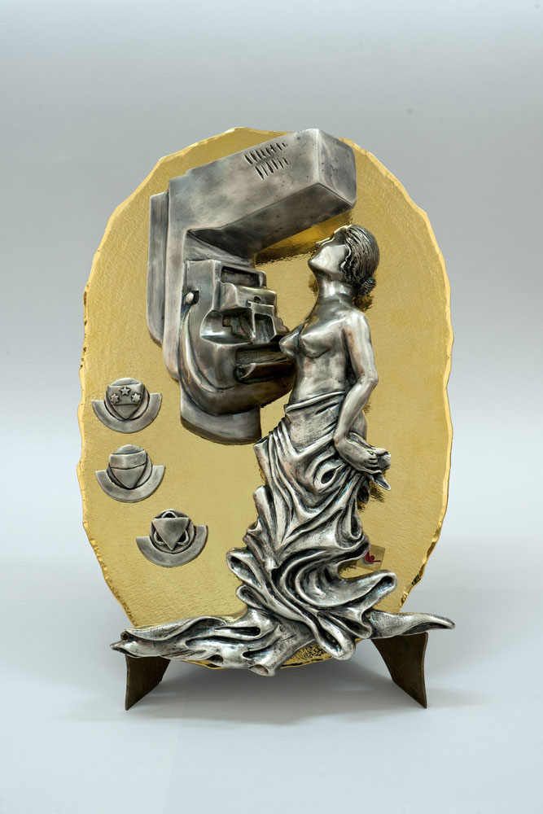

Presentazione del Masgalano offerto dalla LILT, Lega Tumori di Siena
E’ stato realizzato da Vittoria Marziari il Masgalano per i Palii 2015 offerto dalla LILT (Lega Tumori di Siena). Un’opera carica di significati, visto il prezioso lavoro svolto dai tanti medici che, quotidianamente, mettono a disposizione della città professionalità e competenze per combattere e annientare una delle patologie più critiche che solo la prevenzione può riuscire ad arginare.
Nel Masgalano, il premio che ogni anno viene dato alla migliore comparsa che si è distinta per eleganza e dignità di portamento e coordinazione durante la sfilata del Corteo Storico, la mano e la creatività della Marziari hanno saputo trasformare l’argento in significazione. Significato e significante, infatti, sono entrambi presenti. In maniera forte. Non c’è niente di astratto. L’artista ha comunicato con un codice che va oltre le parole e lo scritto. Lo ha fatto attraverso l’arte, trasformandosi in una proiezione del destinatario alla quale ha aggiunto le sue peculiarità di emittente.
Alterate anche le concezioni di primo e secondo piano. Nella sua creazione il mammografo e la donna si “leggono” sullo stesso piano. Un’adattazione spaziale giusta. L’uno a servizio dell’altra, consapevole del beneficio che può trarre dallo strumento diagnostico.
La tecnologia e l’universo femminile tradotti in un bassorilievo di effetto su uno sfondo dove l’argento delle sculture è esaltato dal brillante riflesso dell’oro steso su una base in bronzo. Ma nell’opera della Marziari è facile riscontrare anche il felice connubio tra la modernità e il corpo della donna, generatrice di vita. Il mammografo riprodotto è quello di ultima generazione, mentre la figura femminile richiama l’Art Déco, soprattutto nel drappeggio dell’abito oltre che nella raffinata bellezza della figura, racchiusa nel prezioso metallo: luminosa e morbida.
Una narratività che si sviluppa in simbiosi, accompagnando lo sguardo in un racconto incentrato sulla vita. Un Masgalano, dunque, non solo di pregio per le capacità artistiche della realizzatrice, ma che già, di per sé, rappresenta un messaggio per favorire e incentivare la diffusione della prevenzione cosiddetta secondaria, «quella che permette – come ha ricordato Gaia Tancredi - vice presidente di Legatumori senese, presieduta da Franco Nobile - di raggiungere oltre il 98% delle guarigioni».
Per visualizzare il masgalano 2015 ad altissima risoluzione, cliccate qui oppure sulla foto in cima a questa pagina.